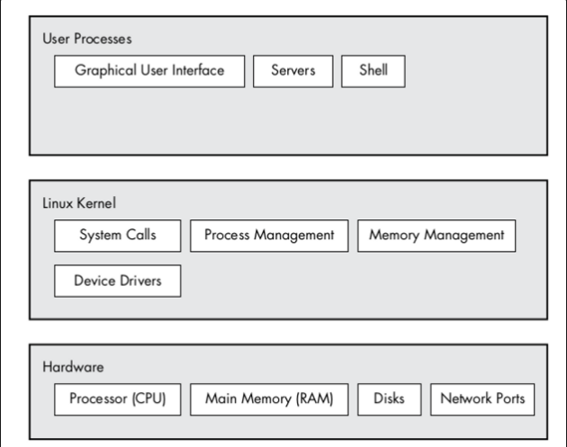
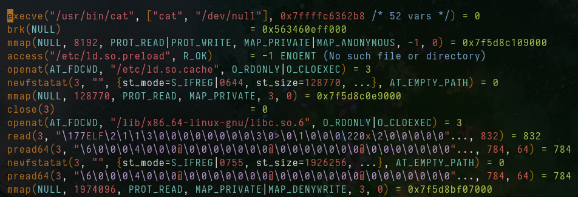

Date : 18 sept 2023
Overview of the linux kernel
The linux operating system can be organized into three different levels of abstraction .
1. The most basic level is hardware, this includes our CPU, memory, hard disks, networking ports, etc.
2. The next level is the kernel, which handles process and memory management, device communication,
system calls, sets up
our filesystem, etc. The kernel's job is to talk to the hardware to make sure it does what we want our
processes to do.
3.The level is the user space, the user space includes the GUI, the programs that you run etc.
Modes
We have 2 modes "UserMode" and "kernel Mode" ,Both have different level of permissions and exists for a reason we will discuss later on .
Kernal Mode (Ring #3)
In kernel mode,the kernel has complete access to the hardware ( it controls everything) . kernel Mode has higher privileges then root account or any other userspace element
User Mode (Ring #0)
In user space mode , there is a very small amount of safe memory and cpu that you are allowed to access (how much is decided by the kernel) . Basically when we want to do anything that involved hardware for example : reading/writing data to disks it is all done in "kernel mode"
Kernel Threads
The linux kernel can run kernel threads , which look much like processes but have access to kernel space
( a specfic section in
memory only allowed for kernel) , They can be recognized by letter "D" in the end
Example: systemd,kthreadd,kblockd etc .
Kernel Space
Kernel runs in whats known as "kernel mode" (Ring 0) and has access to what's called "kernel space" in
memory which can only be accessed by kernel (threads,processes included that are run by the kernel) and then we have userspace in which
user ran processes can run .
So even if something goes wrong and a processes fucks up . kernel can clean it up and system is running
just fine .
System Calls
System calls are mechanisms that allow user space programs to request services
or resources from the kernel. They act as a bridge between user space and kernel space.
User space programs can invoke system calls to perform operations that require higher privileges or direct access to hardware,
such as reading or writing files, creating network connections, or interacting with devices.
For Example: let's say a user space program wants to open a file. It makes a system call, specifying the file's name and the desired operation.
The kernel receives this system call, verifies the program's permissions, and performs the requested file operation on behalf of the program.
Once the operation is completed, the kernel returns the result to the program in user space.
System call API
The kernel makes a certain services avaliable through the system call API . These services allow us to read or write to a file , modify memory usage
( with something like niceness) , modify our network.
The amount of services are fixed , so you can’t be adding system calls nilly willy ,
your system already has a table of what system calls exist and each system call has a unique ID . Understanding system calls require a bit
understanding of C language
For Example: When we run a program like "ls"the code inside this program containsa a system call wrapper ( so not the actuall system call yet) , Inside this wrapper it invokes the system call which will execute a trap, this trap then gets caught by the system call handler and then references the system call in the system call table.
Let's say we are trying to call the "stat()" system call, it's identified by a "syscall ID" and the purpose of the stat() system call is to query the
status of a file. Now remmember you are running the ls program in non-privilege mode.
So now it sees you're trying to make a syscall, it then switches
you over to kernel mode, there it does lots of things but most importantly it looks up your syscall number, finds it in a table based on the
syscall ID and then executes the function you wanted to run.
Once it's done, it will return back to user mode and your process will receive a return
status if it was successful or if it had an error . The system calls get really detailed and we should done our own research on it .
Strace
System calls are a way that user-space talks with the kernel to perform actions such as opening and reading data from a file. The strace utility prints all the system calls that a process makes. By default strace sends it’s output to the stderr (2>) . If we want to save the output we can use the -o flag or just redirect the output of stderr sdterr to a file . When a process wants to start another process it invokes the fork() system call to spawn a copy of itself . and then the copy uses a member of exec() system call to start running a new program.
Example : $ strace cat /dev/null

The strace command beings working on a new process ( the copy of the original process ) just after the fork() call . Therefore the first line of the output from this command should show execve() in action followed by a memory initialization call brk()each line in the output represents a single system call and its corresponding arguments and results.
- execve: This system call is used to execute a new program.
- /usr/bin/cat: The command that is being executed.
- ["cat", "/dev/null"]: The arguments passed to the command.
You get the idea
Tip : A nicer way to see the output of Strace is to redirect it to a file and then view that with file vim .
You can always exit with by pressing SHIFT + Z + Z ( which will save the file and exit)
Ltrace
The ltrace command tracks shared libraries calls . The output is similar to strace but it dosen't track anything at the kernel level .
TipUsage : ltrace -e funcname program [arguments] , Here funcname is name of the specfic function or library that we want to trace .
Example : ltrace -e open ls ( This will display only the open function call made by ls ) , We can also set the Trace Depth with -L flag
adress : The memory address of the function being called. It helps identify the specific library function involved.
function_name: The name of the library function being called. It indicates the specific operation or action taking place.
arguments : The arguments passed to the library function when it was called. These can vary depending on the specific function being traced.
return_value: The value returned by the library function. It represents the result or outcome of the function call.
kernel Location
What happens when you install a new kernel?
Well it actually adds a couple of files to your system, these files are usually added to the /boot directory.
You will see multiple files for different kernel versions:
- vmlinuz: This is the actual linux kernel
- initrd: The initrd is used as a temporary file system, used before loading the kernel
- System.map : symbolic lookup table
- config :kernel configuration settings, if you are compiling your own kernel, you can set which modules can be loaded
Kernel Modules
let’s say we got hiking and we add alot of things in our bag . That dosen’t change the functionality of the bag . we can remove and add items very
easily .
The kernel uses the same consept with kernel modules. The kernel in itself is a monolithic piece of software, when we want to add support for a new
type of keyboard, we don't write this code directly into the kernel code, Just as we won’t create a new bag or get everything out just to add a
new thing .
Kernel modules are piece of code that can be loaded or unloaded into the kernel on demand .They allow us to extend the functionality of the kernel
without actually adding to the core kernel code. We can also add modules and not have to reboot the system (in most cases).
View a list of currently loaded modules: $ lsmod
Load a module: $ sudo modprobe bluetooth
Modprobe loads tries the module from /lib/modules/(kernel version)/kernel/drivers. Kernel modules may also have dependencies,
modprobe loads our module dependencies if they are not already loaded.
Remove a module :$ sudo modprobe -r bluetooth